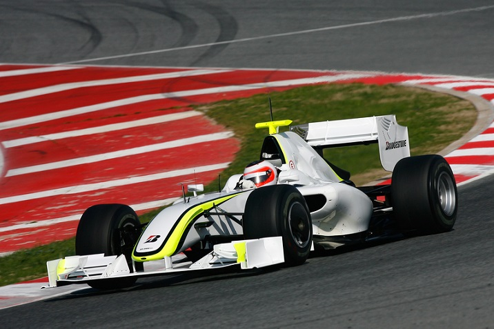

Formula One , also called F1 in short, is an international auto racing sport. F1 is the highest level of single-seat, open-wheel and open-cockpit professional motor racing contest. The objective of a Formula 1 contest is to determine the winner of a race. The driver who crosses the finish line first after completing a pre-determined number of laps is declared the winner.
Formula 1 racing originated during the 1920-30s in Europe from other similar racing competitions. In 1946, the FIA standardized racing rules and this formed the basis of Formula One racing. The inaugural Formula One World Drivers’ championship was then held in 1950, the first world championship series.
A series of formula 1 races are conducted over a period of time, usually over a year called the 'formula 1 World Championship Season'. Each race in a season is called 'Grand Prix'or GP and all the races in a season combined are caled Grands Prix (Plural of Grand Prix). The term 'Grand Prix' is derived from French which means 'Great Prize'.
The number of Grand Prix in a season has varied through the years, starting from 1950 which had 7 races. This number kept increasing up to a maximum of 20 GPs a year (in 2012). Normally there are 19 to 20 GPs in a season now. The 2015 F1 season has 19 Grand Prix, out of which 8 have been completed.
A Formula One race starts with a warm-up lap, called the formation lap and the pit lanes are opened of this purpose 30 minutes before the actual race begins. Pit lanes are tracks away from the grid and are parallel to the start/finish line. During this time, the drivers are free to take any number of warm-up drives, without actually going on the grid. After the pit lane closes, the drivers must take their places on the grid in their qualifying order. Once all the cars have taken their positions on the grid, the race begins with the starting lights − 10 red lights in 5 pairs of columns. Each column lights one after the other, at an interval of 1 second from left to right direction. After all 5 columns are illuminated, they stay in that way for a few seconds and then all of them are extinguished at once and the race begins. If the start is interrupted due to any circumstances, the 5 red lights illuminate again but are not extinguished, instead orange lights are lit up and the race is restarted. The drivers who finish at first, second and third positions at the end of the race stand on a podium and are awarded trophies. A constructor's trophy is also presented to the winner's team